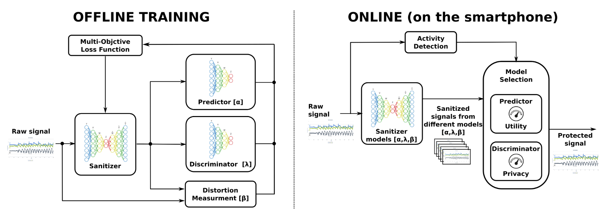

DySan: Dynamically Sanitizing Motion Sensor Data Against Sensitive Inferences Through Adversarial Networks
DySan is a privacy-preserving framework that sanitizes smartphone motion sensor data before it is shared with cloud-based activity monitoring services. The goal is to preserve useful information for physical activity recognition while reducing the risk of inferring sensitive attributes from raw sensor signals.

Overview
Smartphones and wearables make it easy to monitor physical activity through accelerometers and gyroscopes. These signals are useful for recognizing activities such as walking, jogging, sitting or climbing stairs, but they can also leak sensitive information about users when sent to external analytics services.
This project addresses the privacy risks created by motion sensor data. Instead of sending raw signals to the cloud, DySan transforms them locally on the smartphone so that activity monitoring remains possible while unwanted sensitive inferences become much harder.
Approach
DySan is inspired by adversarial learning. It trains a sanitizer, a predictor and a discriminator together. The sanitizer modifies the raw signal, the predictor encourages the sanitized signal to remain useful for activity recognition, and the discriminator tries to infer a sensitive attribute from the sanitized data.
The training objective balances three criteria: protecting privacy, preserving activity recognition accuracy and limiting distortion between the original and sanitized signals. This makes the system useful beyond classification, for example for estimating physical activity statistics such as step count.
Dynamic sanitization
A single sanitization model does not necessarily provide the best privacy-utility trade-off for every user and every moment. Motion signals depend on the person, the sensor, the activity and the evolution of movement over time.
DySan therefore trains several sanitizer models with different hyperparameters during an offline phase. During the online phase, deployed on the smartphone, it dynamically selects the most appropriate sanitizer for each batch of incoming data.
Evaluation
DySan was evaluated on real motion sensor datasets using gender as the sensitive attribute to protect. Without protection, gender could be inferred from raw data with very high accuracy. With sanitized data, DySan reduced gender inference substantially while keeping activity recognition accurate.
The experiments showed that DySan could reduce gender inference from about 98% on raw data to 57% on sanitized data, while activity recognition only dropped from about 95% to 92%. The system also preserved step counting reasonably well and remained compatible with real-time processing on a smartphone.